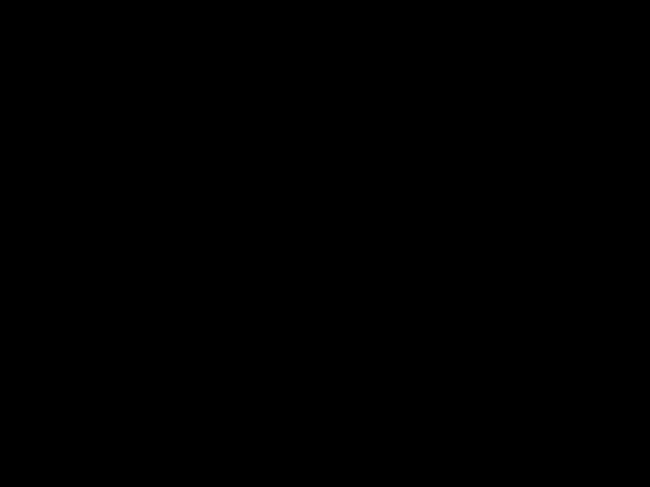

|
|
|
In this project, we worked on the following features:
.dae files..dae files..dae files.
For the ray generation part of the rendering pipeline, we started out by finding the bounds of the screen
which we did by utilizing the horizontal and vertical field of view aspect ratio
which are stored as a member double variable in the Camera, which we then converted to
radians.
We then use the formulas detailed in the spec but modified to construct the following vector:
$((2x-1)\tan(\frac{\text{hFov}}{2}), \ (2y-1)\tan(\frac{\text{vFov}}{2}), \ -1)$
which we can then left-matmul with the 3x3 camera-to-world rotation matrix to get a normalized unit vector,
which represents the direction of our ray.
The constructred ray also has an origin at the camera position, and is what we return.
For the primitive instruction parts of the rendering pipeline,
we raytrace the respective pixel by sampling num_samples many different points uniformly
(specifically it is uniform over a unit square via UniformGridSampler2D::get_sample()) across the
pixel,
and then we use the camera's generate_ray method to generate a ray for each of them
using the camera.
We then average the radiance (found from est_radiance_global_illumination) from all of the rays and
update.
We used the Möller-Trumbore algorithm for computing the intersection of a triangle and a ray in three dimensional space. Given a ray with origin $o$ and direction $d$, and a triangle defined at vertices $p_0, p_1, p_2$, Möller-Trumbore attempts to find an analytical solution to
$o + td = (1 - b_1 - b_2)p_0 + b_1p_1 + b_2p_2$
For $t, b_1,$ and $b_2$.
If this is not possible, then the ray is on a plane parallel to the triangle and no intersection is found. Otherwise, the solution is guaranteed to give us the intersection of the ray with the triangle's plane, expressed as both a distance along the ray $t$ and barycentric coordinates $(1 - b_1 - b_2, b_1, b_2)$. Then the ray intersects the triangle if and only if the intersection with the point is interior to the triangle; this can be determined by confirming whether each of the barycentric coordinates is within $[0, 1]$.
|
|
|
|
|
Our BVH construction algorithm has a base case and a recursive case as it is a recursive algorithm. Formally, it has the following structure:
max_leaf_size primitives or less in the list,
we create a new BVHNode node and pass along the start and end
vectors of Primitive pointers to the newly created node from what was passed into
the construct_bvh method.
We also set the l and r pointers to NULL to ensure there is no garbage
in them before returning the newly created leaf node.
max_leaf_size primitives in the list, we need to divide
the primitives among two children of the BVHNode. This is done using the heuristic of mean
centroid. Formally, we compute the axis-aligned bounding box containing each primitive's centroid,
computing the mean of these centroids, and splitting the primitives by comparing their centroid to the mean along the
bounding box's largest dimension.
std::partition function to get the split point, using the heuristic of mean centroid, as detailed above.
Finally, we recurse on the 'left group' which consists of those from start to the split point, as well as the 'right group'
which consists of values greater than the heuristic or those from the split point to the end.
|
|
|
|
|
|
We found significant speedups on rendering times (as seen by the difference being on orders of magnitudes
apart). Empirically, the time to render a scene appears linear in the average number of intersection tests per
ray. Without BVH-based acceleration, the latter is linear in the number of primitives, which makes sense
because we are effectively casting every single ray on every single primitive in the scene. With BVH, the
average is significantly reduced, as we do not need to check approximately half the number of primitives in each level of recursion,
which leads to scaling logarithmically with the number of primitives. This can
be explained by the ray traversing only part of the BVH tree when determining points of intersection.
An unexpected result is CBlucy.png rendering the quickest despite being the most
geometrically complex. A possible explanation is that the smaller area of the shape causes many rays to miss
the bounding box of the BVH accelerator.
Each of the benchmarks were performed on a resolution of 800 x 600.
| Scene | Number of Primitives | Render time (no BVH) | Render time (BVH) | Average intersection tests per ray (no BVH) | Average intersection tests per ray (BVH) |
|---|---|---|---|---|---|
cow.png |
5856 | 9.3192s | 0.0505s | 1139.9278 | 3.8612 |
maxplanck.png |
50801 | 95.3548s | 0.0621s | 10956.7800 | 4.4421 |
CBlucy.png |
133796 | 299.8749s | 0.0327s | 37231.0064 | 1.9677 |
Direct lighting can be divided into zero-bounce illumination, which takes into account the light emitted directly from a light source to the camera without reflecting off the rest of the scene, and one-bounce illumination, consisting of the light that can reach the camera from the light source by reflecting off the scene exactly once. In either case, we begin by sampling "outgoing rays" from the scene to the camera plane at a position uniformly sampled from a grid. Zero-bounce illumination is somewhat straightforward to calculate, since we simply ask if the outgoing ray is reaching the camera from a light source. With one-bounce illumination, we determine the amount of light reflected along the outgoing ray from its intersection with the scene, if one exists (otherwise we just move on). Since this requires an infinite integral which we cannot compute, we instead compute the Monte Carlo estimate of this reflectance as follows:
$\frac{f(i_1, r_1 \rightarrow r_2) L_i(i_1, r_2) \cos \theta_j}{p(r_2)}$
Where $f(i_1, r_1 \rightarrow r_2)$ is the value of the BRDF from $r_2$ to $r_1$, $L_i(i_1, r_2)$ is the radiance along $r_2$ incident to $i_1$, $\theta_j$ is the angle between $r_2$ and the surface normal at the intersection, and $p(r_2)$ is the pdf of sampling $r_2$.Importance light sampling follows the same approach with slight modifications. Instead of sampling uniformly over a hemisphere, the algorithm samples uniformly from each light source, considering only the rays that hit the point of intersection from the source. It samples one ray from each point source (since there is only one ray incident to a given point from such a source), and an arbitrary number of rays from each area source. It rejects "shadow rays" which are on the opposite side of the surface from the outgoing ray (we know this if the z-value of the shadow ray in object coordinates is negative), computes the sample mean reflectance for that light source as described above, and then returns the mean of the sample means.
| Uniform Hemisphere Sampling | Light Sampling |
|---|---|
|
|
|
|

|
|

|
|
|
|
|
A soft shadow represents a point from which a light source is partially, but not fully, occluded. These are the areas where low numbers of light rays generate the most noise, and where increasing the number of light rays reduces noise the most. One interpretation is that, because of the partial occlusion of the light source at this point, light sampling demonstrates high variance; many rays from this source are obstructed, but many are not. Thus, decreasing the number of light rays decreases sample size and increases variance, resulting in noise.
These results demonstrate the efficacy of lighting sampling as a tool for reducing noise and increasing performance in comparison to the more naive hemisphere sampling result. Not only do we observe little to no soft shadow noise in the lighting-sampled render than its hemisphere-sampled counterpart, but the former does so while tracing fewer rays overall, resulting in a significant speedup. Observe the results for the displayed examples:
| Scene | Rays traced (Hemisphere Sampling) | Rays traced (Lighting Sampling) | Render time (Hemisphere Sampling) | Render time (Lighting Sampling) |
|---|---|---|---|---|
CBspheres_lambertian.dae |
240053478 | 98367505 | 69.8184s | 27.0214s |
dragon.dae |
266229549 | 97148287 | 72.5541s | 29.2156s |
What lighting sampling is doing is "limiting" the search within the hemisphere to only those rays originating from a known light source. Thus, while it samples fewer rays than uniform sampling, more of these samples will produce light and thus contribute significantly to the overall reflectance. This causes sample variance and consequently noise to decrease. The ability to render point light sources is another advantage of lighting sampling. This effect is because, in order for hemisphere sampling to sample from a point source, it would have to select the single "correct" ray with infinitesimally small probability.
The algorithm for indirect lighting relies on the observation that $n$-bounce sampling is achievable by sampling a ray and conducting $(n - 1)$-bounce on the resulting hit point. From this we build our recursive approach. Given a sampled ray $r_1$ and its intersection $i_1$ with the scene:
|
|

|
|
|

|
Both direct and indirect illumination present an incomplete picture of the render. Direct illumination consists only of zero-bounce rays (travelling directly from the light source to the camera) and one-bounce rays. Because the latter only illuminates those parts of the scene that rays from the light source can directly reach, which is not fully representative of the scene's appearance. The indirect illumination demonstrates what is missing, including the undersides of 3D geometries, ceiling, and diffuse color. Adding the two renders gives us a complete, globally illuminated scene.
|
|
|

|
|
|
|
Here we see that each additional bounce permitted in our global illumination estimation conveys more information about the scene. Maximum ray depths of 0 and 1 are equivalent to zero-bounce illumination and direct illumination, respectively. The former only illuminates the light source, while the latter fails to illuminate certain regions of the scene. Two-bounce rays introduces indirect illumination, while max ray depths of three or more are able to diffuse color from the walls onto more of the scene. The differences become less noticeable as the max depth becomes incredibly large; there are very few 100-bounce rays, for example, that convey more information about the scene than a 3-bounce ray.

|
|
|
|
|
|
|
|
|
|
Observe the noise which decreases in intensity as the number of sampled rays per pixel increases. This is due to the inverse correlation of the variance of the Monte Carlo estimator with the sample size. In practical terms, the fewer samples we take at each pixel, the less representative the samples are of the illumination from the whole light source (either too many shadow rays or not enough), giving us pixels that are brighter or darker than expected.
In the previous part, we rendered a elegant images with the only downside being that they had a lot of noise.
The immediate solution to this problem is to increase the number of samples per pixel.
However, this is not always the best solution. As seen in the previous projects,
increasing the number of samples per pixel (aka increasing the sample rate) increases the render time at a much higher rate.
This background information is important because it leads us to the next technique, Adaptive Sampling.
Adaptive Sampling is a technique that allows us to render an image with a lower sample rate in areas that converge faster than others.
This allows us to render an image faster, while still getting a good result.
The way it works is we defined 2 double-precision variables s1 and s2 at the beginning of the program,
initialized to 0. Every iteration we update s1 and s2 as follows:
$$s_1 = \sum_{k=1}^n x_k$$
$$s_2 = \sum_{k=1}^n x_k^2$$
for the $n$th iteration -- these 2 variables are updated every time a new sample is taken (each iteration).
Chronologically, for every integer multiple of samplesPerBatch samples, we calculate:
$$I = 1.96 \cdot \frac{\text{Stdev of the Luminance of the Light Samples}}{\sqrt{\text{Number of Samples}}}
= 1.96 \sqrt{\frac{\text{Variance of the Luminance of the Light Samples}}{\text{Number of Samples}}}$$
and if $I \le \text{maxTolerance} \cdot\mu$, then we stop sampling that pixel, saving the iteration of sampling that pixel,
for averaging the color of that pixel correctly, in the process.
This condition utilizes mean and variance of the luminance of the $n$ samples, which are updated every time $I$ is calculated.
Specifically, for each ray that we casted, we find the radiance's illum which is $x_k$ for the $k$th sample.
Then, we update the mean and variance of the luminance of the $n$ samples as follows:
$$\mu = \frac{s_1}{n}$$
$$\sigma^2 = \frac{1}{n - 1} \cdot \left(s_2 - \frac{s_1^2}{n}\right)$$
where $\mu$ is the mean of the luminance of the $n$ samples, and $\sigma^2$ is the unbiased
(see https://en.wikipedia.org/wiki/Bessel%27s_correction) variance of the luminance of the $n$ samples.
|
|
|
|
|
|
|
|

|
bvh.cpp.
Specifically, we first updated BVHAccel::construct_bvh to construct the BVH using a stack and a while loop.
A key issue that we ran into here was that we needed to keep track of the current node that we were constructing
as well as a std::vector::iterator> that pointed to the current primitive that we were
constructing the BVH for wrt ranges. We solved this by using C++'s std::make_pair function to
allow us to store both of these values in a single std::pair object. Then, we replaced the base case
of the recursive call with an if statement in the while loop that checked the same condition and continued if so.
Finally we updated the recursive call to push the next node and primitive range onto the stack instead. We ran into a lot of bugs here,
especially regarding the order in which we pushed the next node and primitive range onto the stack and the order in which we popped them off,
but we were able to solve them by carefully thinking through the algorithm and testing it on a few different scenes.
We also updated BVHAccel::intersect to use a stack and a while loop, and updated it in a similar manner as above.
cow.dae.
cow.dae.
cow.dae.cow.dae.
.cpp file to a .cu and then adding the __global__ keyword to the
functions that we wanted to run on the GPU. We then added the __device__ keyword to any functions that we wanted to call from the GPU.
In addition to those keywords,
we also used the CUDA-specific syntax to allocate memory on the GPU and to transfer data between the CPU and GPU.
We did this by using the CUDA functions cudaMalloc, cudaMemcpy, and cudaFree.
Finally we launched kernels on the GPU using the <<<...>>> syntax, that Rahul was familiar with from taking CS C267.
This allowed us to accumulate radiance values estimated for each pixel in the sample buffer, using different threads for each pixel,
in an atomic fashion.